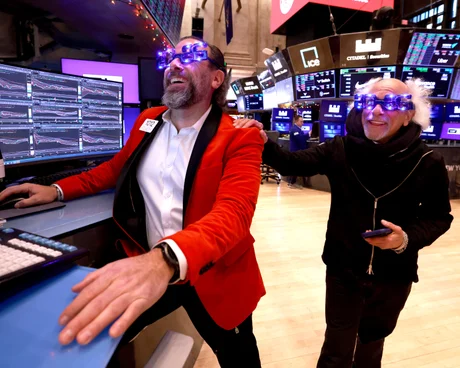

Dow Jones Reaches Historic 50,000 Milestone on Technology Strength


For the first time in its 131-year history, the Dow Jones Industrial Average went over 50,000 on Friday. This was a big deal for Wall Street. The benchmark index ended the day at 50,015.67, which was a 2.3 percent increase. The S&P 500 index, which has more stocks, went up 2%, and the Nasdaq Composite, which focuses on tech stocks, went up 2.2%.
Experts in the market say that a lot of things had to happen for this big event to happen. Investors are happy with the tech sector because big companies are making a lot of money and companies in all sectors are staying profitable. People are also more willing to put money into stocks and less worried about how much it will cost to borrow money for businesses and consumers because there are more and more signs that the Federal Reserve may lower interest rates in the next few months.
Earlier this week, the equity markets were under a lot of pressure because technology stocks were so volatile and people were worried about the long-term viability of AI investments. But they have been very strong. Cryptocurrencies like Bitcoin fell sharply earlier this week, but they made up some of their losses on Friday. This showed that the mood in the market was getting better. Most people in the market have ignored tensions between countries and instead focused on how strong the US economy is and how well companies are doing.
"The main reason the market is going up is because semiconductor makers are leading the way in the artificial intelligence technology boom."
The main reason the market is going up is because semiconductor makers are leading the way in the artificial intelligence technology boom. The price of Nvidia's stock went up by 7.9% on Friday. With a market value of over $4.5 trillion, Nvidia is the biggest publicly traded company in the world. The leaders of the company say that there is still a lot of demand for AI infrastructure and that the amount of money being spent is reasonable and sustainable for the industry.

The Technology Sector is Doing the Best
A lot of money is going into AI in the tech sector, which is good for the stock market. The technology sector is still the main reason why the overall market has gone up. Investors in both institutions and retail have been very interested in software companies, semiconductor makers, and companies that work on AI throughout 2025. Investors still believe that the sector's profits are good and that it has room to grow, even though other parts of the economy are going through cycles of uncertainty.
Investors are especially interested in making semiconductors, AI applications, and cloud computing services. Investors have stayed positive about these areas because they think that companies will keep spending a lot of money on technology infrastructure no matter what happens in the economy as a whole. This change in sectors toward technology has been one of the most steady market trends this year.
Some Parts of the Market Did Well, While Others Did Poorly
The main reason the market went up on Friday was because of technology stocks, but the performance of the stock market as a whole was still uneven. After Amazon said it would spend $200 billion this fiscal year on AI and robotics, its stock dropped 5.6%. Some investors were worried about how big the planned investment was because they thought it would hurt profits in the short term because of high capital costs.
Amazon wasn't doing well, but the overall market breadth was still positive. This means that more stocks went up than down. This means that the Dow is going up because the whole market is strong, not just a few big companies. The financial services, healthcare, and consumer discretionary sectors all had good days.
The Market is Going Up Because People Think Interest Rates Will Go Down
Investor hopes that the Federal Reserve will lower interest rates have helped the stock market go up a lot. If the economy needs it, the central bank is likely to lower interest rates several times in the next year, according to market prices. A lot of different kinds of businesses would benefit from lower borrowing costs. For example, tech companies that need money to grow and banks that have a lot of loans.
Most people in the market think that inflation measures may keep going down. This lets the Federal Reserve relax its strict policy that was put in place to fight high prices. This expectation has calmed some fears about how higher borrowing costs will affect corporate profits, which has helped the overall value of stocks.
How Investors Feel and the Economy's Future
There are worries about geopolitical tensions in many parts of the world, but most investors are still positive about the U.S. economy and the chances of companies making money. The job market is strong, as shown by steady job reports and wage increases, which has made people spend money. Because the economy is strong, businesses have been able to keep prices high while still meeting customers' needs for goods and services.
American families are still financially healthy enough to keep spending at levels that will keep the economy growing, as shown by consumer confidence indicators and buying habits. Businesses do well when the economy is strong, which in turn affects stock prices and the market as a whole. As long as people keep spending and businesses keep making money, the equity market should stay strong.
Looking Ahead: Will the Market Gains Last?
Some market analysts think that the Dow Jones hitting 50,000 is a sign of long-term success, while others think it could be a warning sign. Some people think that the market should keep going up because companies are making a lot of money, some sectors are fairly valued, and the economy is really strong. Some people are worried that tech stocks could drop if interest rates go up or if people start to worry more about growth.
In the next few weeks and months, we'll see if the Dow's milestone is the beginning of more growth in the market or just a temporary high before things calm down. To get a sense of where the market is headed and whether its current valuation is sustainable, investors should pay close attention to what the Federal Reserve says about interest rates, corporate earnings reports, and economic indicators.


Koepka’s Leap of Faith: What Comes Next After LIV Golf Exit
DECEMBER 24, 2025

Skenes and Skubal Win Cy Young Awards as Future Uncertainty Grows
NOVEMBER 12, 2025


Business

Google Unveils Major Investment in Germany: Data Centers & Renewable Energy
Google LLC is about to announce its biggest investment in Germany to date. It will focus on data centers, infrastructure, and renewable energy projects.
BUSINESS BY NOVEMBER 6, 2025

UBS Pauses Credit Suisse Wealth Transfers Amid Integration Challenges
Financial insiders who know what's going on say that UBS has put off moving some very wealthy Credit Suisse customers to its platform because of problems with technology and management.
BUSINESS BY NOVEMBER 6, 2025

US Business PMI Hits 47-Month High in April 2026
The US manufacturing PMI rose to a 47-month high in April 2026, signaling a rebound in business activity despite ongoing inflationary pressures.
BUSINESS BY APRIL 24, 2026